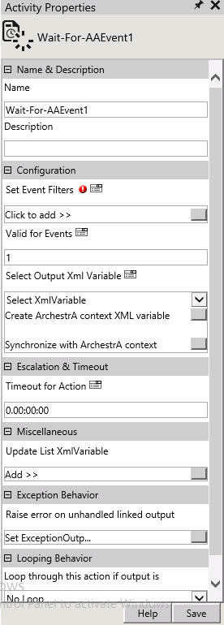

No
Activity Description:
Use the Wait-For-AAEvent activity to wait for a number of events from ArchestrA for a particular time period. You can set the number of events and the time period in the properties of that activity. It can store the event context details into specified XML variables.
Activity Properties:
You can configure the Wait-For-AAEvent activity by specifying appropriate values for the properties in the Activity Properties area. Click Activity Properties in the toolbar or select the Properties option from the short-cut menu of the Wait-For-AAEvent activity to access the Activity Properties.
The following dialog box shows the Activity Properties of the Wait-For-AAEvent activity:

Name & Description
You can use these properties to specify the name and description for the activity
Property Type: Mandatory.
Property Type: Optional. Set this property only if required.
Configuration
Use these properties to configure the functionality of the activity.
Property Type: Mandatory
Property Type: Optional. Set this property only if required.
Escalation & Timeout
Use this property to specify escalation and timeout settings for the activity.
Property Type: Optional. Set this property only if required.
Miscellaneous
Property Type: Optional. Set this property only if required.
Looping Behavior
Use this property to specify the looping behavior of the activity.
Property Type: Optional. Set this property only if required.
Exception Behavior
Each activity has the Raise Error on Unhandled Linked Output property. Click on this to see the default configured mapped error outputs in red with their check boxes selected.
Activity Outputs:
The Wait-For-AAEvent Activity returns the following values: